在深度學習領域，生成模型 (Generative Models) 的目標是學習真實數據集的分佈 $p_{\text{data}}(\boldsymbol{x})$，並從中採樣生成全新的高品質數據（如人臉影像、藝術畫作、音訊信號）。傳統生成模型（如變分自編碼器 VAE、高斯混合模型 GMM）通常需要顯式擬合機率密度函數，這導致生成的樣本常常呈現模糊或邊緣失真。
早期的生成品質評估依賴於人工肉眼觀察，但人類的主觀判斷無法作為計算梯度（Gradient）以進行反向傳播優化的標的。2014 年由 Ian Goodfellow 等人提出的產生式對抗網絡 (Generative Adversarial Network, GAN) 徹底變革了這一領域——它引入了一個由神經網絡構成的「人工裁判」（判別器），實現了可微分的端到端生成優化。
GAN 架構由兩個相互競爭的神經網絡組成：
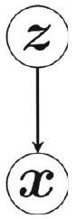
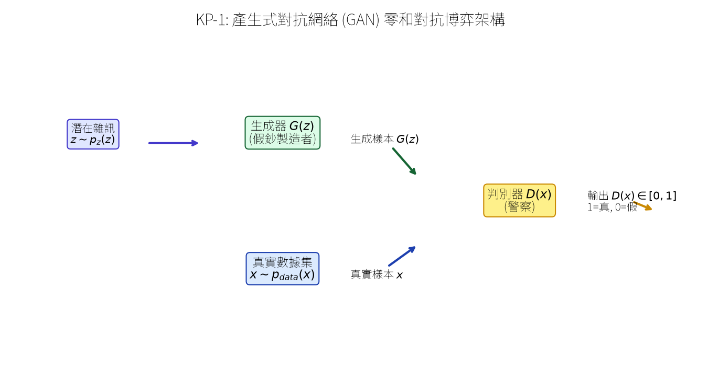
這在做什麼：模擬生成器 $G$（擬合數據）與判別器 $D$（區分真假）在對抗過程中，樣本分佈與判別分數的動態演化。
怎麼操作：點擊「執行對抗訓練步」，調整產生器學習率與判別器學習率。
觀察什麼：隨著訓練推進，生成分佈 $p_g(x)$ 逐漸覆蓋真實數據分佈 $p_{\text{data}}(x)$，判別器得分 $D(x)$ 趨近 0.5。
理論基準：完美理想狀態下 $p_g = p_{\text{data}}$ 且 $D^*(x) = 0.5$。
Goodfellow 在 2014 年的開創性論文中，將 GAN 比喻為假鈔製造者 (Generator) 與警察 (Discriminator) 之間的博弈：
設真實數據分佈為 $\boldsymbol{x} \sim p_{\text{data}}(\boldsymbol{x})$，潛在雜訊分佈為 $\boldsymbol{z} \sim p_z(\boldsymbol{z})$。判別器 $D(\boldsymbol{x})$ 對真實樣本輸出接近 1，對生成樣本 $G(\boldsymbol{z})$ 輸出接近 0。兩者的二玩家零和賽局可表示為極小化極大 (Minimax) 優化問題：
$$\min_G \max_D V(D, G) := \mathbb{E}_{\boldsymbol{x} \sim p_{\text{data}}(\boldsymbol{x})}[\log D(\boldsymbol{x})] + \mathbb{E}_{\boldsymbol{z} \sim p_z(\boldsymbol{z})}[\log (1 - D(G(\boldsymbol{z})))]$$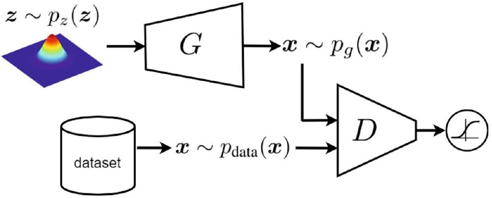
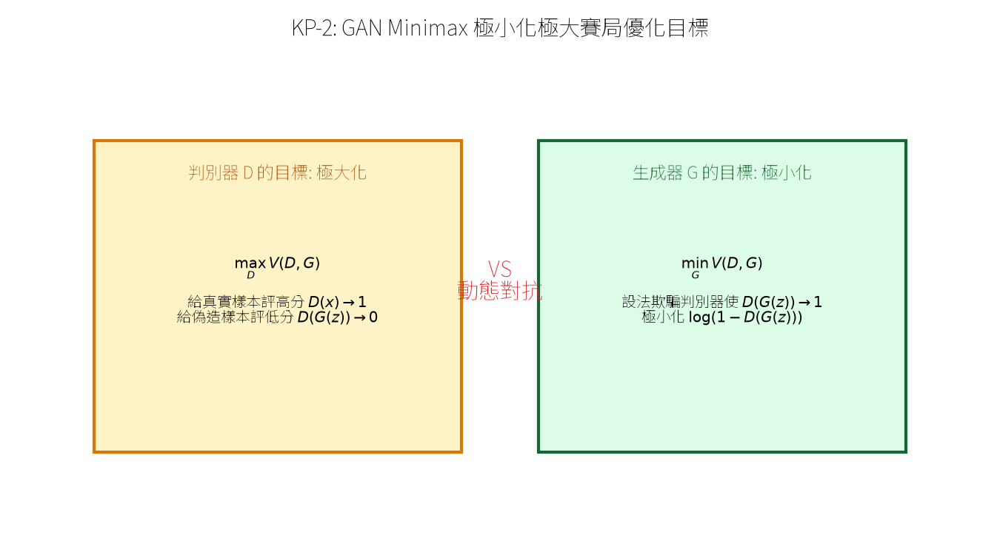
這在做什麼：計算給定判別器對真實樣本給分 $D(\boldsymbol{x})$ 與對生成樣本給分 $D(G(\boldsymbol{z}))$ 下的博弈價值函數 $V(D, G)$。
怎麼操作：滑動 $D(\boldsymbol{x})$ (真實評分) 與 $D(G(\boldsymbol{z}))$ (偽造評分)。
觀察什麼：當 $D(\boldsymbol{x}) \to 1$ 且 $D(G(\boldsymbol{z})) \to 0$ 時，判別器極大化 $V(D, G)$；當 $D(G(\boldsymbol{z})) \to 1$ 時，生成器極小化 $V(D, G)$。
理論基準：$V(D, G) = \log D(\boldsymbol{x}) + \log (1 - D(G(\boldsymbol{z})))$。
在實際訓練中，由於生成器與判別器的目標相反，我們採用交替隨機梯度下降 (Alternating SGD) 進行求解：
在訓練初期，生成器品質極差，判別器很容易以高信心區分真假（$D(G(\boldsymbol{z})) \approx 0$）。此時 $\log (1 - D(G(\boldsymbol{z})))$ 的斜率極度平緩，導致生成器遭遇梯度飽和與消失 (Saturating Gradients)。
Goodfellow 等人建議在訓練初期將生成器的目標由極小化 $\log(1 - D(G(\boldsymbol{z})))$ 改為極大化 $\log D(G(\boldsymbol{z}))$（非飽和損失 Non-saturating Loss），在初期提供強大的梯度推動力。
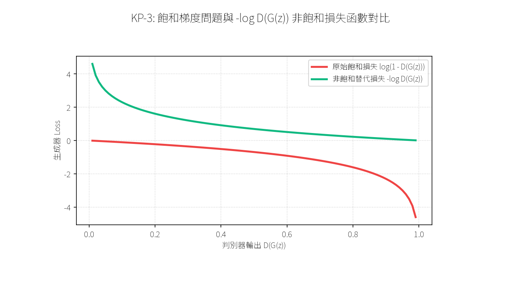
這在做什麼：對比判別器輸出 $D(G(\boldsymbol{z}))$ 近於 0 時，兩種生成器損失函數產生的梯度強度差異。
怎麼操作：拖動判別器分數 $D(G(\boldsymbol{z}))$ (0.001 到 0.95)。
觀察什麼：當 $D(G(\boldsymbol{z})) \to 0$ 時，飽和損失的梯度趨近於 -1 平緩飽和，而非飽和損失 $-\log D$ 產生極大的驅動梯度！
理論基準：非飽和替代損失在初期提供更強大的反向傳播梯度。
給定任意固定生成器 $G$，其產生的數據分佈記為 $p_g(\boldsymbol{x})$。目標函數 $V(D, G)$ 可表示為對全空間的連續積分：
$$V(D, G) = \int_{\boldsymbol{x}} \left( p_{\text{data}}(\boldsymbol{x}) \log D(\boldsymbol{x}) + p_g(\boldsymbol{x}) \log (1 - D(\boldsymbol{x})) \right) d\boldsymbol{x}$$為了對每個 $\boldsymbol{x}$ 求極大值，考察極值函數 $f(y) = a \log y + b \log (1 - y)$（其中 $a = p_{\text{data}}(\boldsymbol{x}), b = p_g(\boldsymbol{x}), y = D(\boldsymbol{x})$）。求導數並設為零：
$$f'(y) = \frac{a}{y} - \frac{b}{1 - y} = 0 \implies a(1 - y) = b y \implies y^* = \frac{a}{a + b}$$因此，對於給定生成器 $G$，全局最優判別器 $D^*(\boldsymbol{x})$ 的解析表示式為：
$$D^*(\boldsymbol{x}) = \frac{p_{\text{data}}(\boldsymbol{x})}{p_{\text{data}}(\boldsymbol{x}) + p_g(\boldsymbol{x})}$$將最優判別器 $D^*(\boldsymbol{x})$ 代回目標函數 $V(D^*, G)$：
$$V(D^*, G) = \mathbb{E}_{\boldsymbol{x} \sim p_{\text{data}}}\left[\log \frac{p_{\text{data}}(\boldsymbol{x})}{p_{\text{data}}(\boldsymbol{x}) + p_g(\boldsymbol{x})}\right] + \mathbb{E}_{\boldsymbol{x} \sim p_g}\left[\log \frac{p_g(\boldsymbol{x})}{p_{\text{data}}(\boldsymbol{x}) + p_g(\boldsymbol{x})}\right]$$引入 KL 散度與 JS 散度的定義（$JSD(P \| Q) = \frac{1}{2} KLD\left(P \| \frac{P+Q}{2}\right) + \frac{1}{2} KLD\left(Q \| \frac{P+Q}{2}\right)$），整理可得：
$$V(D^*, G) = -\log 4 + 2 \cdot JSD(p_{\text{data}} \| p_g)$$結論：當判別器達到最優時，生成器 $G$ 的訓練目標等價於極小化真實分佈與生成分佈之間的 JS 散度！當 $p_g = p_{\text{data}}$ 時，JS 散度為 0，最小值為 $-\log 4 \approx -1.386$。
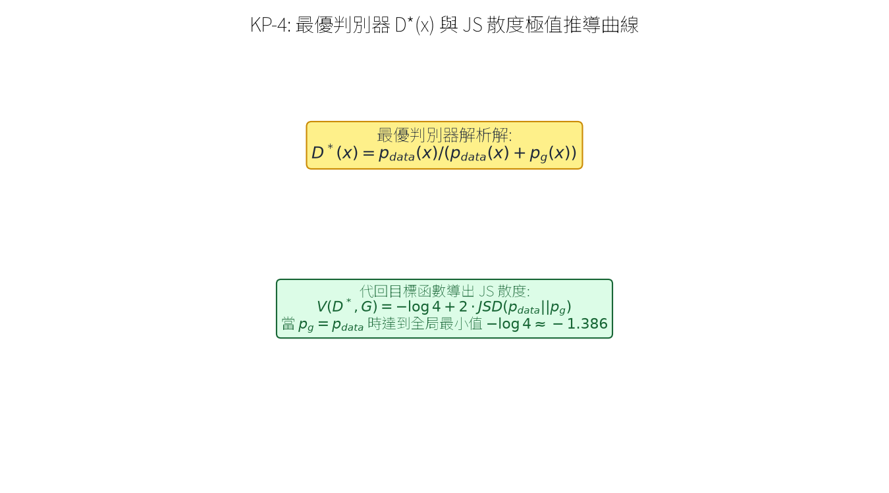
這在做什麼：計算給定數據密度 $p_{\text{data}}(\boldsymbol{x})$ 與生成密度 $p_g(\boldsymbol{x})$ 下的最優判別器 $D^*(\boldsymbol{x})$ 及兩分佈之間的 JS 散度。
怎麼操作：調整生成密度 $p_g$ 的重合比例 (0.1 到 1.0)。
觀察什麼：當 $p_g = p_{\text{data}}$ 時，$D^*(\boldsymbol{x}) = 0.5$ 且博弈價值 $V(D^*, G) = -\log 4 \approx -1.3863$。
理論基準：最優目標函數等價於極小化 JS 散度。
在博弈論中，納許均衡 (Nash Equilibrium) 指的是這樣一種狀態：任何一位玩家單方面改變自己的策略都無法獲得更高的收益。
在 GAN 的零和動態博弈中，全局納許均衡點精確對應於：
$$\begin{cases} p_g(\boldsymbol{x}) = p_{\text{data}}(\boldsymbol{x}) & \text{(生成器完美重構真實數據分佈)} \\ D^*(\boldsymbol{x}) = \frac{1}{2} & \text{(判別器完全無法區分真假，盲猜機率為 50\%)} \end{cases}$$儘管理論證明了納許均衡點的存在性，但使用交替梯度下降 (Alternating SGD) 尋找納許均衡點在幾何面上極不穩定。
考慮經典玩具問題 $\min_x \max_y (x \cdot y)$：其連續動態為 $\dot{x} = -y, \dot{y} = x$。若採用離散梯度更新，軌跡不會收斂到原點 $(0, 0)$，反而會以外擴螺旋線（Spiral Out）發散！這解釋了 GAN 訓練中常見的旋轉振盪 (Oscillations) 與不收斂問題。
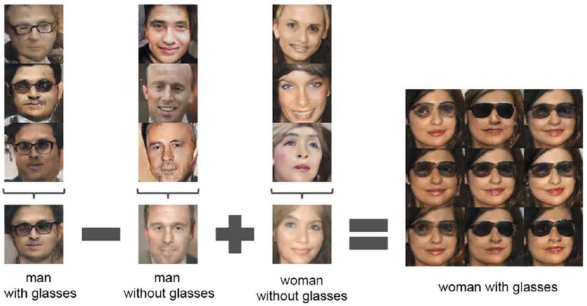
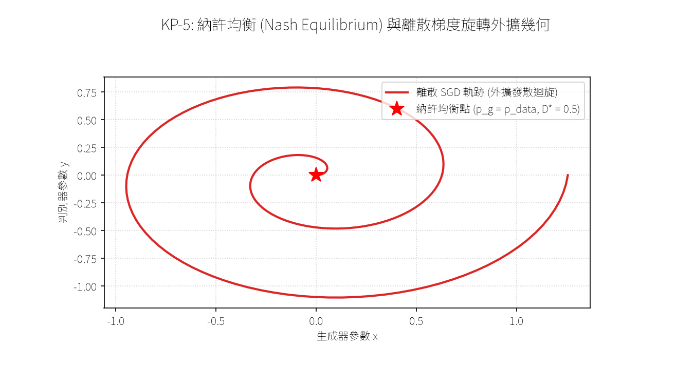
這在做什麼：模擬玩具對抗問題 $\min_x \max_y (x \cdot y)$ 在離散梯度更新下，參數軌跡偏離納許均衡點 $(0, 0)$ 的幾何迴旋。
怎麼操作：設定學習率 $\eta$，點擊「執行 10 步梯度更新」。
觀察什麼：學習率過大時離散軌跡呈螺旋外擴發散，說明了 GAN 交替 SGD 訓練不穩定的幾何根源。
理論基準：連續向量場微分方程為 $\dot{x} = -y, \dot{y} = x$。
標準原始 GAN 的生成過程是無受控的隨機採樣。為了精確控制生成樣本的類別或屬性（如指定生成「貓」或「數字 7」），Mirza 等人提出了 Conditional GAN (cGAN)。條件資訊 $\boldsymbol{y}$（如 One-hot 標籤或類別嵌入）同時被餵入生成器與判別器：
$$\min_G \max_D V(D, G) = \mathbb{E}_{\boldsymbol{x} \sim p_{\text{data}}}[\log D(\boldsymbol{x} \mid \boldsymbol{y})] + \mathbb{E}_{\boldsymbol{z} \sim p_z}[\log (1 - D(G(\boldsymbol{z} \mid \boldsymbol{y}) \mid \boldsymbol{y}))]$$2015 年 Radford 等人提出的 DCGAN 奠定了卷積神經網絡在 GAN 上的設計範式：
DCGAN 展現了連續潛在空間的語意結構。類似 Word2Vec，我們可以對潛在向量進行向量加減運算，例如：
$$\boldsymbol{z}_{\text{戴眼鏡男}} - \boldsymbol{z}_{\text{不戴眼鏡男}} + \boldsymbol{z}_{\text{不戴眼鏡女}} \approx \boldsymbol{z}_{\text{戴眼鏡女}}$$將合成後的潛在向量餵入 $G$，便能生成高清晰度的「戴眼鏡女性」圖像！
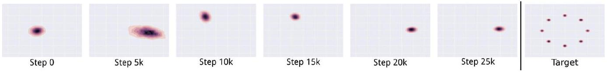
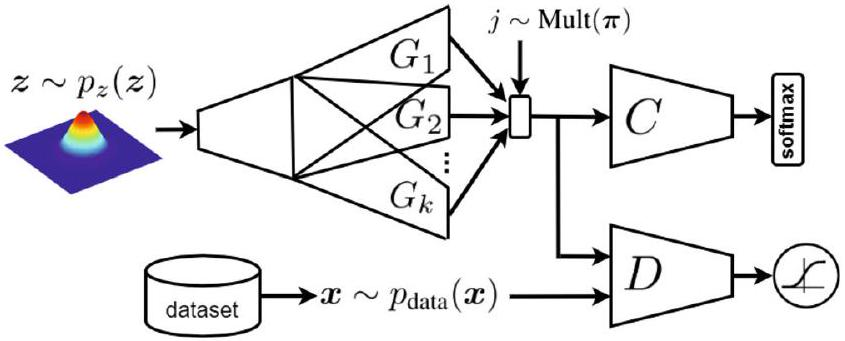
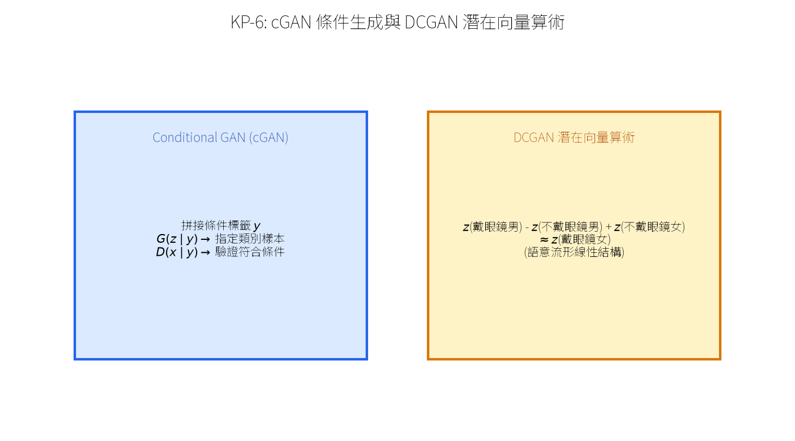
這在做什麼：模擬 DCGAN 潛在向量加減法（如 $\boldsymbol{z}_{\text{戴眼鏡男}} - \boldsymbol{z}_{\text{不戴眼鏡男}} + \boldsymbol{z}_{\text{不戴眼鏡女}}$）合成新特徵。
怎麼操作：選擇特徵 A、B、C 屬性組合。
觀察什麼：潛在空間具備連續線性語意流形結構，合成後的向量精確呈現目標組合特徵。
理論基準：DCGAN 潛在空間可進行語意解耦向量算術。
模式崩塌 (Mode Collapse) 是 GAN 訓練中最惡名昭彰的失敗模式。當真實數據集包含多個模式（例如包含 0 到 9 十種手寫數字）時，生成器發現某一個模式（如數字 "1"）能輕易欺騙判別器，於是只專注於生成該單一模式，徹底放棄生成其他模式。
其數學根源在於：極小化 KL 散度 $KLD(p_g \| p_{\text{data}})$ 是 Mode-Seeking 的，當生成器更新過快時，容易塌陷到單一局部極小值。
Salimans 等人提出讓判別器同時觀察整個 Mini-batch 樣本之間的相似度。若生成器產生的批量中所有樣本高度相似（發生坍塌），判別器能立刻識別並給予極低分懲罰。
Metz 等人提出在更新生成器 $G$ 時，讓生成器「前瞻 (Unroll)」判別器未來 $k$ 步的梯度更新。這破壞了單步貪婪對抗，使生成器無法透過單一模式投機取巧。
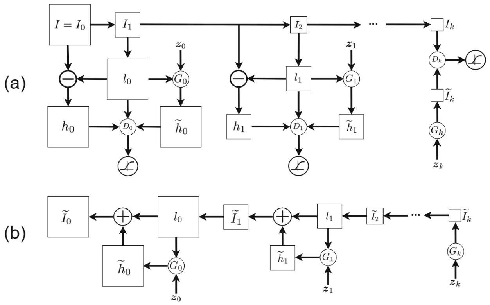
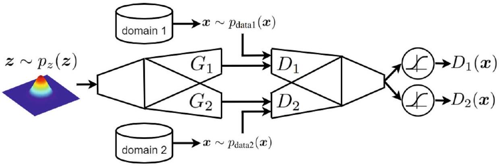
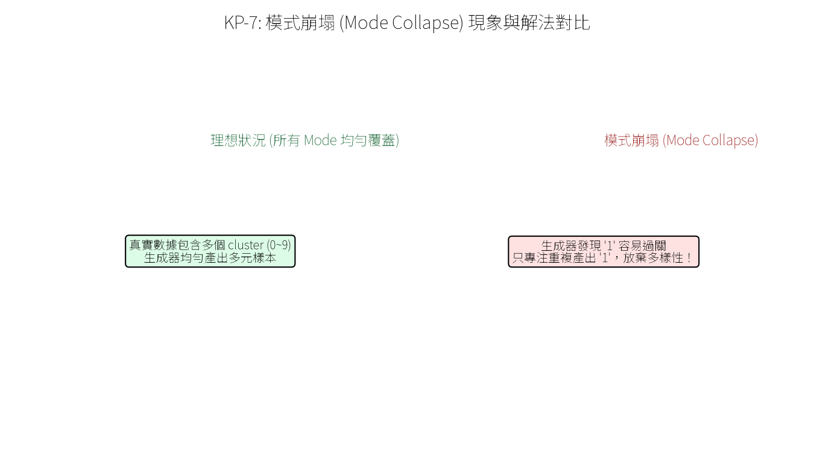
這在做什麼：對比標準 GAN 發生 Mode Collapse 只生成單一數字，與啟用 Minibatch Discrimination 後修復多樣性。
怎麼操作：切換「標準 GAN (發生 Mode Collapse)」與「Minibatch GAN (多樣性維持)」。
觀察什麼：標準 GAN 生成樣本全部凝固為數字 "1"；Minibatch GAN 均勻產出 0 到 9 多元數字。
理論基準：Minibatch Discrimination 讓判別器同時檢查批量內樣本間的相似度。
為了同時對抗 Overfitting 與 Mode Collapse，D2GAN 引入兩個判別器：$D_1$ 傾向對真實數據評高分，$D_2$ 傾向對生成數據評高分，利用 KL 與反向 KL 散度相結合避免模式遺漏。
Arjovsky 等人在 2017 年提出的 Wasserstein GAN (WGAN) 從根本上解決了 JS 散度在兩分佈無重疊時梯度消失的問題。WGAN 採用 Wasserstein 距離（又稱推土機距離 Earth Mover's Distance, EMD）：
$$W(p_{\text{data}}, p_g) = \inf_{\gamma \in \Pi(p_{\text{data}}, p_g)} \mathbb{E}_{(\boldsymbol{x}, \boldsymbol{y}) \sim \gamma}[\|\boldsymbol{x} - \boldsymbol{y}\|]$$利用對偶定理，WGAN 的目標函數簡化為：
$$\max_{D \in \mathcal{D}_L} \mathbb{E}_{\boldsymbol{x} \sim p_{\text{data}}}[D(\boldsymbol{x})] - \mathbb{E}_{\boldsymbol{z} \sim p_z}[D(G(\boldsymbol{z}))]$$其中判別器 $D$（此處稱為 Critic）必須滿足 1-Lipschitz 連續條件（即 $\|\nabla_{\boldsymbol{x}} D(\boldsymbol{x})\| \le 1$）。WGAN 原論文採用權重剪裁 (Weight Clipping) 來強制實施 1-Lipschitz，後續的 WGAN-GP 則升級為梯度懲罰 (Gradient Penalty)。
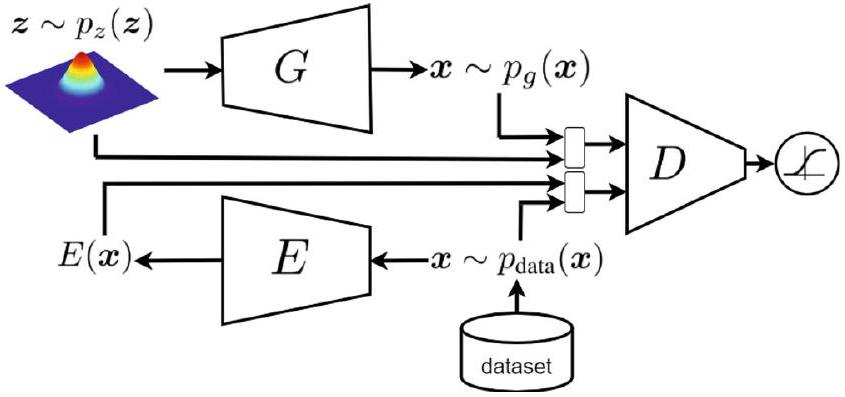
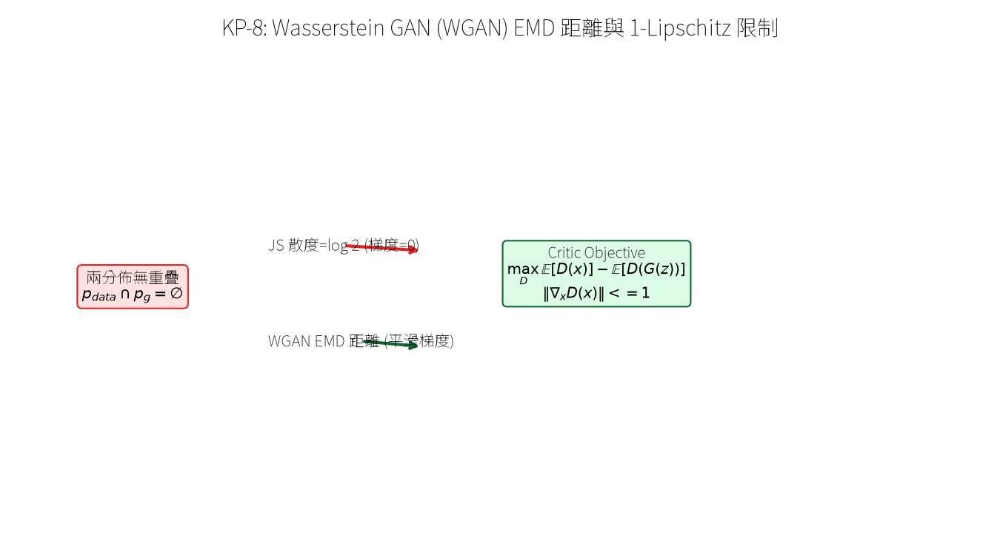
這在做什麼：計算兩無重疊高斯分佈間的中心距離 $\mu$ 下，JS 散度與 Wasserstein 距離 (EMD) 的變化。
怎麼操作：移動分佈中心距離 $\mu$ (0.0 到 5.0)。
觀察什麼：當 $\mu > 2$ 無重疊時，JS 散度恆定為 $\log 2 \approx 0.693$（梯度歸零）；而 Wasserstein 距離隨 $\mu$ 線性增長，提供恆定持續的梯度！
理論基準：WGAN EMD 距離解決了 JS 散度的梯度消失問題。
在生成模型領域，學習數據分佈主要有兩大哲學流派：
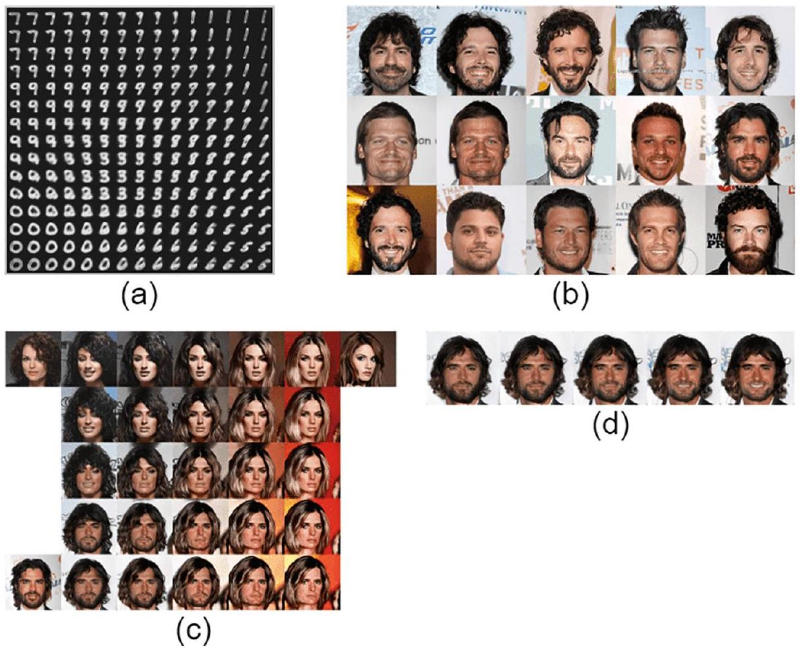
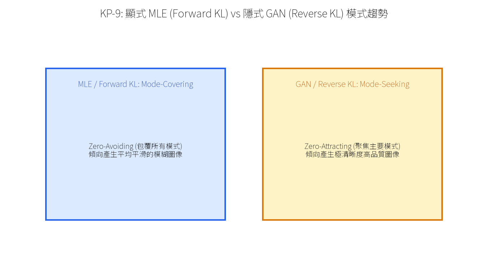
這在做什麼：對比雙峰真實分佈下，MLE（極小化 $KLD(p_{\text{data}} \| p_g)$）與 GAN（極小化 $KLD(p_g \| p_{\text{data}})$）的擬合行為。
怎麼操作：切換「MLE (Forward KL)」與「GAN (Reverse KL)」。
觀察什麼：MLE 包覆雙峰形成平均模糊曲線；GAN 選擇鎖定其中單一峰值產生清晰高畫質。
理論基準：Forward KL 為 Mode-Covering，Reverse KL 為 Mode-Seeking。
KL 散度與 JS 散度都是廣義 $f$-散度 ($f$-Divergence) 的特例。對於滿足 $f(1)=0$ 的凸函數 $f$，$f$-散度定義為：
$$D_f(p_{\text{data}} \| p_g) = \int_{\boldsymbol{x}} p_g(\boldsymbol{x}) f\left( \frac{p_{\text{data}}(\boldsymbol{x})}{p_g(\boldsymbol{x})} \right) d\boldsymbol{x}$$利用 Fenchel 凸對偶定理，任何凸函數 $f(u)$ 都可以寫成其共軛函數 $f^*(t) = \sup_{u} \{u t - f^*(t)\}$ 的形式。Nowozin 等人在 2016 年提出了 $f$-GAN，將下界寫為：
$$D_f(p_{\text{data}} \| p_g) \ge \sup_{T \in \mathcal{T}} \left( \mathbb{E}_{\boldsymbol{x} \sim p_{\text{data}}}[T(\boldsymbol{x})] - \mathbb{E}_{\boldsymbol{x} \sim p_g}[f^*(T(\boldsymbol{x}))] \right)$$這表明：任何 $f$-散度（如 Total Variation, Pearson $\chi^2$, Reverse KL）都能透過選擇對應的 $f^*$ 構建出對應特性的 GAN！
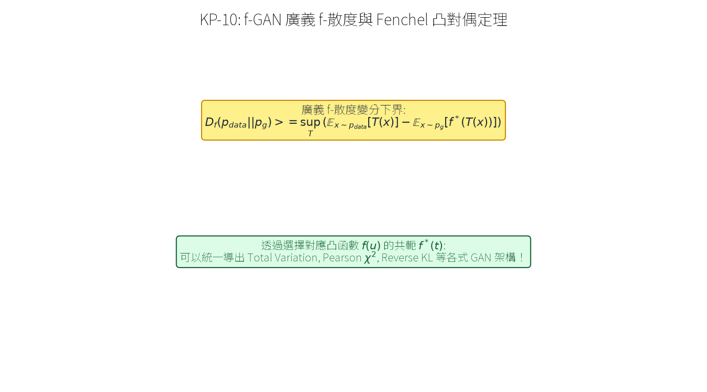
這在做什麼：計算選擇不同凸函數 $f(u)$ 時，其共軛函數 $f^*(t)$ 與導出的 GAN 目標函數。
怎麼操作：選擇散度類型 (JS Divergence, Pearson $\chi^2$, Reverse KL)。
觀察什麼：不同散度對應不同的共軛函數 $f^*(t)$，證明了所有 $f$-散度的統一對偶架構。
理論基準：$D_f(p_{\text{data}} \| p_g) \ge \mathbb{E}_{p_{\text{data}}}[T(x)] - \mathbb{E}_{p_g}[f^*(T(x))]$。
傳統變分自編碼器 (VAE) 限制變分後驗分佈 $q_\phi(\boldsymbol{z} \mid \boldsymbol{x})$ 必須為簡單的高斯分佈。Mescheder 等人提出了 AVB，利用對抗判別器隱式估算變分後驗與先驗之間的對數密度比 (Log-Density Ratio)，允許極度複雜靈活的任意變分後驗分佈。
傳統 GAN 僅對單點權重 $\boldsymbol{\theta}_G, \boldsymbol{\theta}_D$ 進行極小化極大點估計。Saatci 等人提出的 BGAN 引入貝氏推斷，對生成器與判別器的權重後驗分佈 $p(\boldsymbol{\theta}_G \mid \mathcal{D}), p(\boldsymbol{\theta}_D \mid \mathcal{D})$ 進行 SGLD (Stochastic Gradient Langevin Dynamics) MCMC 採樣，有效防止了過擬合與 Mode Collapse。
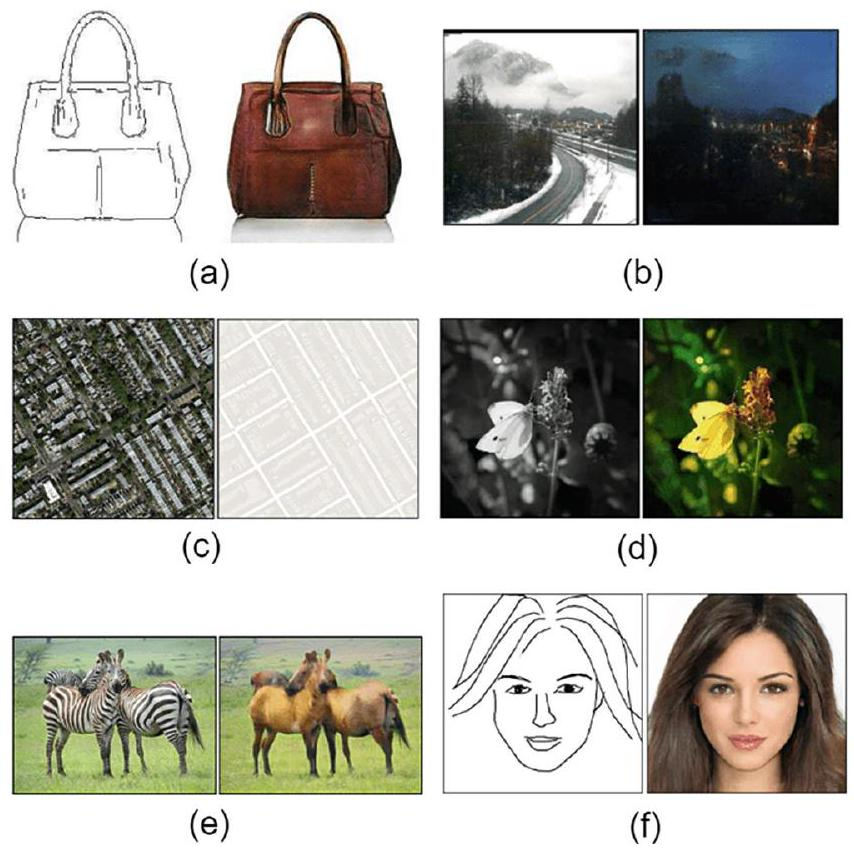
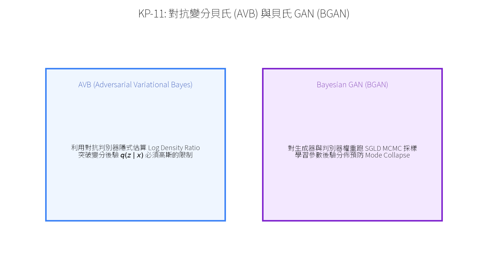
這在做什麼：模擬 BGAN 透過 SGLD MCMC 對生成器權重後驗分佈 $p(\boldsymbol{\theta}_G \mid \mathcal{D})$ 進行採樣，維持多個權重假說。
怎麼操作：點擊「SGLD MCMC 採樣權重」。
觀察什麼：傳統點估計易死鎖於單一模式；貝氏採樣探索多個權重模式，有效維持生成樣本多樣性。
理論基準：SGLD 採樣公式 $\Delta \boldsymbol{\theta} = \frac{\eta}{2} \nabla \log p(\boldsymbol{\theta}) + \epsilon, \epsilon \sim \mathcal{N}(0, \eta)$。
Salimans 等人提出不要直接讓 $G$ 欺騙 $D$ 的最後純量輸出，而是要求 $G$ 生成的樣本在判別器中間隱藏層的特徵統計平均值與真實數據對齊：
$$\mathcal{L}_{\text{FM}} = \|\mathbb{E}_{\boldsymbol{x} \sim p_{\text{data}}}[f(\boldsymbol{x})] - \mathbb{E}_{\boldsymbol{z} \sim p_z}[f(G(\boldsymbol{z}))]\|_2^2$$其中 $f(\boldsymbol{x})$ 為判別器中間特徵層提取器。
Chen 等人提出的 InfoGAN 能夠在無監督條件下自動解耦數據的語意特徵（如數字傾斜度、筆劃粗細、情感表情）。
InfoGAN 將潛在空間拆分為不可解釋雜訊 $\boldsymbol{z}$ 與可解釋語意代碼 $\boldsymbol{c}$。透過極大化語意代碼 $\boldsymbol{c}$ 與生成樣本 $G(\boldsymbol{z}, \boldsymbol{c})$ 之間的互資訊 (Mutual Information, $I(\boldsymbol{c}; G(\boldsymbol{z}, \boldsymbol{c}))$)，模型被強迫將特定語意結構編碼到 $\boldsymbol{c}$ 中！
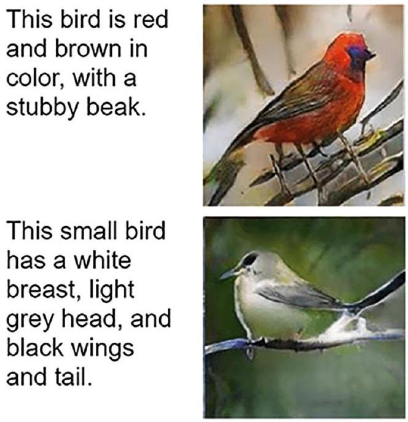
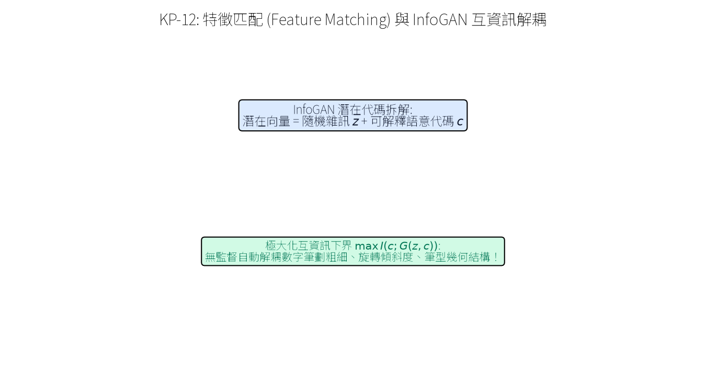
這在做什麼：滑動解耦語意代碼 $c_1$（旋轉傾斜度）與 $c_2$（筆劃粗細），觀察生成樣本特徵的獨立平滑變化。
怎麼操作：拖動 $c_1$ 旋轉角度與 $c_2$ 筆劃粗細。
觀察什麼：極大化互資訊 $I(c; G(z, c))$ 使代碼 $c_1, c_2$ 分別控制獨立語意屬性而互不干擾。
理論基準：互資訊極大化目標誘導無監督語意解耦。
Mao 等人在 2017 年提出的 LSGAN 發現：傳統二進位交叉熵損失在判別器成功分類後，即便生成樣本離真實邊界極遠，也不會再產生梯度。LSGAN 將交叉熵替換為最小二乘均方誤差 (MSE) 損失：
$$\begin{align \min_D V_{\text{LSGAN}}(D) &= \frac{1}{2} \mathbb{E}_{\boldsymbol{x} \sim p_{\text{data}}}[(D(\boldsymbol{x}) - b)^2] + \frac{1}{2} \mathbb{E}_{\boldsymbol{z} \sim p_z}[(D(G(\boldsymbol{z})) - a)^2] \\ \min_G V_{\text{LSGAN}}(G) &= \frac{1}{2} \mathbb{E}_{\boldsymbol{z} \sim p_z}[(D(G(\boldsymbol{z})) - c)^2] \end{align}$$這強迫離 decision boundary 遠的生成樣本受到二次方懲罰，產生更穩定的梯度並提升生成畫質。
Zhao 等人提出的 EBGAN 將判別器看待為一個能量函數 (Energy Function)。判別器被設計為一個自編碼器 (Autoencoder)，其重構誤差 (Reconstruction Error) $\|D(\boldsymbol{x}) - \boldsymbol{x}\|^2$ 即代表能量。真實樣本賦予低能量（低重構誤差），偽造樣本賦予高能量。
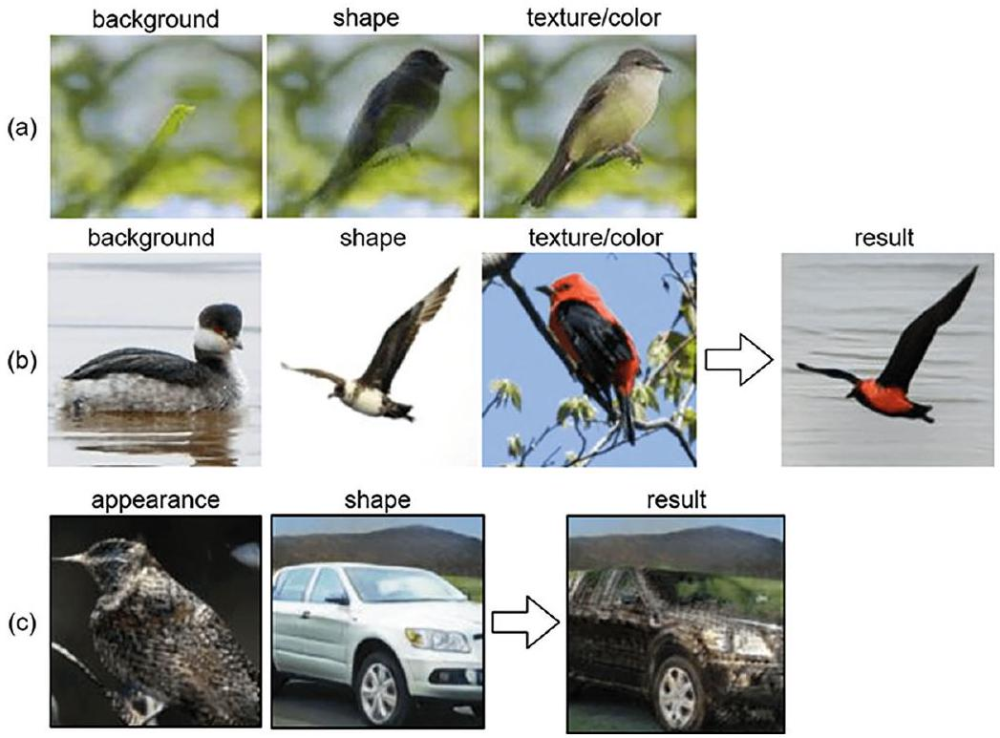
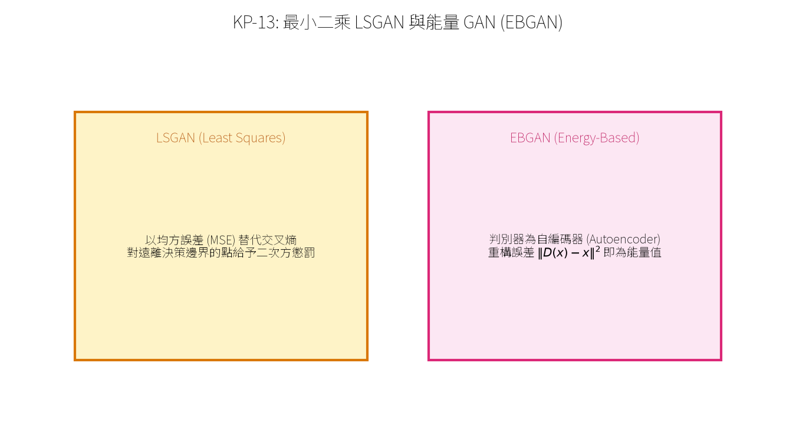
這在做什麼：對比偏離決策邊界點處，傳統 GAN 交叉熵（無梯度）與 LSGAN MSE（二次方推回梯度）的懲罰力。
怎麼操作：拖動生成樣本與決策邊界的距離 $d$ (0.1 到 4.0)。
觀察什麼：距離增大時，LSGAN 的 MSE 懲罰呈二次方 $d^2$ 暴增，提供持續拉回力量。
理論基準：LSGAN 的 MSE 損失在整個空間維持平滑拉回梯度。
在半監督學習中，GAN 展現出極強的特徵提取能力。CatGAN (Categorical GAN) 利用類別熵極小化進行半監督分類；另一種流行做法是將判別器由 2 分類擴展為 $K+1$ 分類（前 $K$ 個為真實數據的類別，第 $K+1$ 個專門代表生成器偽造樣本）。
Karras 等人在 2018 年提出了 ProGAN，突破了高解析度圖像（如 $1024 \times 1024$）生成困難的限制。ProGAN 採用金字塔漸進生長架構：從低解析度（$4 \times 4$）開始訓練，穩定後平滑融入新層逐漸提升解析度（$8 \times 8 \to 16 \times 16 \to \dots \to 1024 \times 1024$）。
標準 GAN 只能從 $\boldsymbol{z} \to \boldsymbol{x}$，無法將真實圖像 $\boldsymbol{x}$ 反向編碼為潛在向量 $\boldsymbol{z}$。BiGAN (Bidirectional GAN) 與 ALI (Adversarially Learned Inference) 引入了一個編碼器 $E(\boldsymbol{x})$，判別器改為對聯合對 $D(\boldsymbol{x}, \boldsymbol{z})$ 進行判別，實現了雙向精確映射。
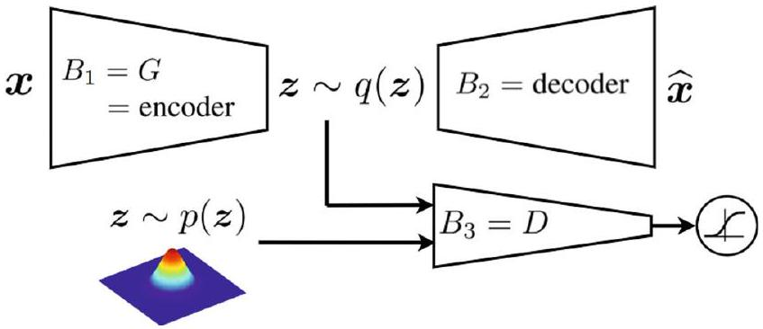
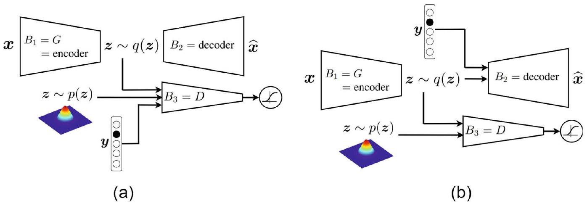
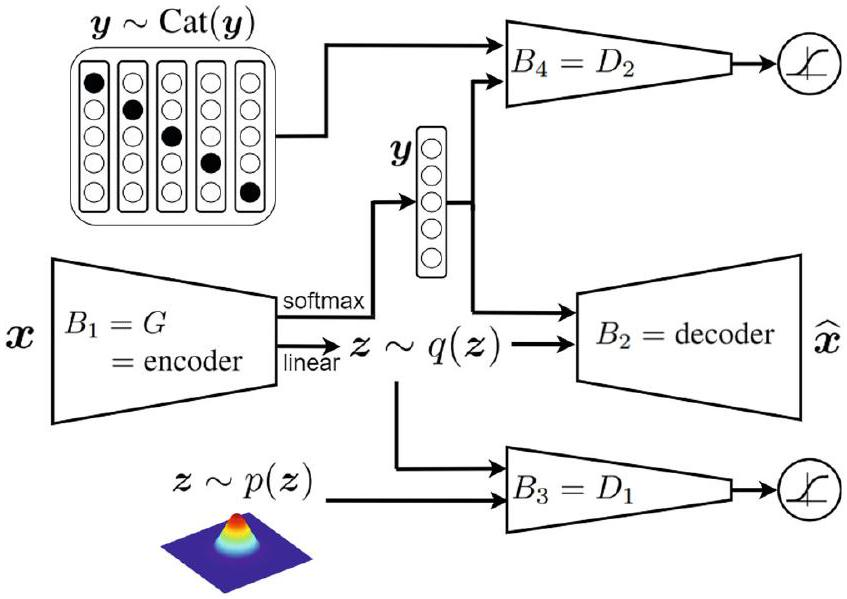
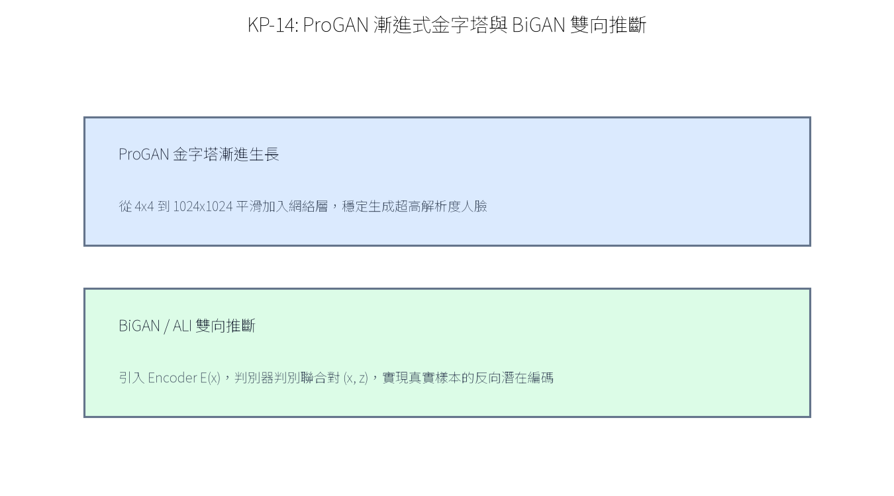
這在做什麼：模擬 ProGAN 隨著訓練階段漸進平滑融入新網絡層，提升影像解析度。
怎麼操作：選擇金字塔生長階段 (4x4, 16x16, 128x128, 1024x1024)。
觀察什麼：低階解析度先奠定幾何佈局與色彩，高階層逐漸補充發絲與皮膚細節。
理論基準：漸進式分辨率生長確保極高解析度 GAN 穩定收斂。
一個訓練良好的 GAN 生成器 defines 了一條從高維潛在空間 $\mathbb{R}^p$ 到數據幾何流形 (Data Manifold) $\mathcal{M} \subset \mathbb{R}^d$ 的光滑流形映射 $\boldsymbol{x} = G(\boldsymbol{z})$。
評估 GAN 潛在空間是否平滑（即是否記憶過擬合）的標準方法是在潛在空間中挑選兩個點 $\boldsymbol{z}_1, \boldsymbol{z}_2$，並對其連線進行路徑插值 (Interpolation)，觀察生成圖像的漸變過程。
在高維正態分佈 $\boldsymbol{z} \sim \mathcal{N}(\mathbf{0}, \boldsymbol{I})$ 中，隨機向量的模長 $\|\boldsymbol{z}\|$ 高度集中在半徑為 $\sqrt{p}$ 的超球面殼層（高維高斯薄殼現象 Gaussian Annulus Theorem）。
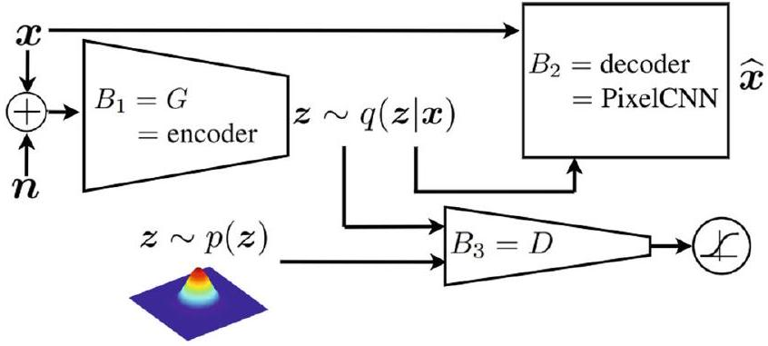
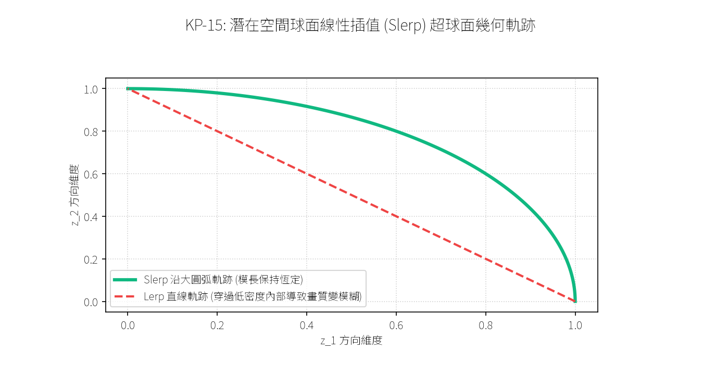
這在做什麼：對比高維潛在空間中，直線插值 Lerp 與大圓弧球面插值 Slerp 的向量模長變化。
怎麼操作：滑動插值比例 $\alpha$ (0.0 到 1.0)。
觀察什麼：在 $\alpha=0.5$ 時，Lerp 直線穿過內部導致模長萎縮 $\|\boldsymbol{z}\| \to 0.707$（樣本模糊）；Slerp 沿大圓弧旋轉，模長恆定為 1.0（畫質清晰）。
理論基準：高維高斯正態分佈樣本集中在超球面殼層。
Zhu 等人在 2017 年提出的 CycleGAN 解決了跨域圖像轉換（如「斑馬 ↔ 白馬」、「油畫 ↔ 照片」）缺乏成對（Paired）訓練數據的世紀難題。CycleGAN 引入了循環一致性損失 (Cycle Consistency Loss)：
$$\mathcal{L}_{\text{cyc}}(G, F) = \mathbb{E}_{\boldsymbol{x} \sim p_X}[\|F(G(\boldsymbol{x})) - \boldsymbol{x}\|_1] + \mathbb{E}_{\boldsymbol{y} \sim p_Y}[\|G(F(\boldsymbol{y})) - \boldsymbol{y}\|_1]$$保證將圖像從 $X$ 映射到 $Y$（經由 $G$），再從 $Y$ 映射回 $X$（經由 $F$）後能夠精確還原，完美保留結構細節！
Makhzani 等人在 2015 年提出的 AAE 將 GAN 的對抗思想融入自編碼器。AAE 用對抗判別器取代了 VAE 中的 KL 散度懲罰：
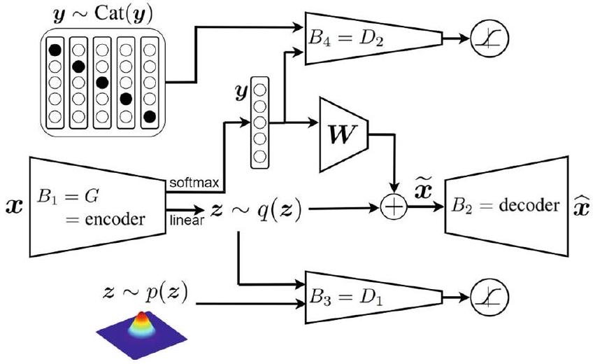
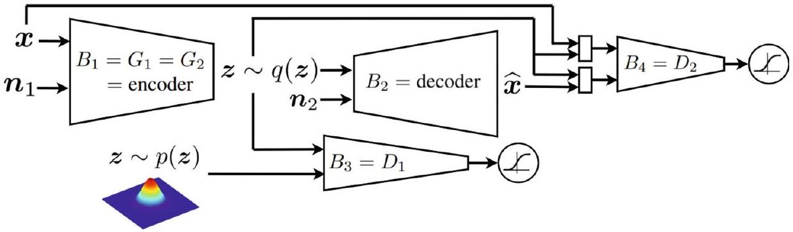
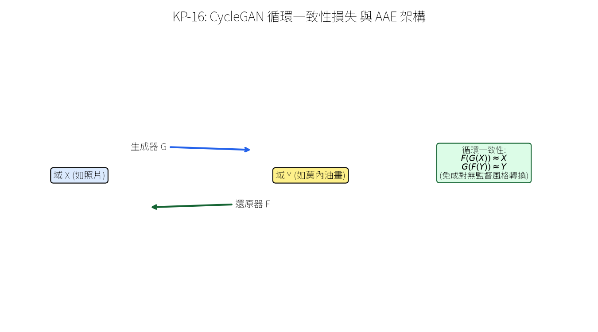
這在做什麼：計算雙向映射 $X \to G(X) \to F(G(X))$ 在不同重構誤差下的循環一致性損失。
怎麼操作：調整還原像素誤差 $\Delta x$ (0.0 到 1.0)。
觀察什麼：當還原誤差 $\Delta x \to 0$ 時，循環一致性損失趨近於 0，確保未成對數據也能保留原始圖像幾何特徵。
理論基準：Cycle-Consistency Loss 防止無監督映射結構形變。